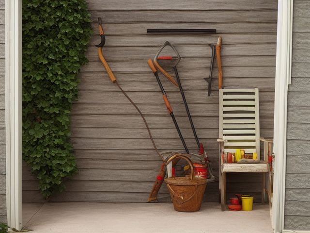

Garage micro zone
The Lawn and Garden Tool Zone
Stores the yard tools and outdoor supplies so long handles stay off the floor and garden chemicals stay latched away from everything else.
One session: 60-90 min. most of it in Sort and Safety, because the chemical shelf needs its own careful pass

What done looks like
Every long-handled tool hanging head-up on the rail with nothing leaning in a corner, the hose coiled on its reel beside the door it goes out of, and all garden chemicals in their original labelled containers behind a latch above head height.
Check these before you start
- Poison, choke, or strangleConcentrated weed killer decanted into an unlabelled bottle, and slug pellets or granular feed left where a dog can reach and will eat them.
- Fall, cut, or crushRakes and forks standing loose in a corner waiting to be stepped on or to topple handle-first, and unguarded hedge shear blades on an open shelf.
- Burn or fireThe mower's petrol can sharing a shelf with fertiliser, which is an oxidiser and should never sit next to fuel.
The six passes, in order
Work them in this order. Sorting after you have arranged things means arranging things you were about to remove.
Sort
Decide what stays. Everything else leaves the zone now.
Out go the rake with three tines left, the hose with the split you have meant to patch for two summers, and the cracked nursery pots kept for seedlings you never started. Count your spades honestly, because most garages hold four and dig with one.
Straighten
Give what stays a home, placed where the hand actually reaches.
Long handles hang head-up on a rail so no fork stands loose in a corner waiting to be trodden on. The hose lives on a reel beside the door it goes out of, not coiled on the slab. Fertiliser, weed killer, and seed share one shelf with a lip on it, well away from the cooler and anything else that touches food or skin.
Shine
Clean it, and use the cleaning to inspect what you cannot see when it is full.
Scrape caked soil off the spade and hoe blades, wipe them with an oily rag, and run a file along the spade edge so it bites next time. Empty and rinse the spreader hopper, because leftover fertiliser eats the metal from the inside out over a winter.
Safety
Make the zone safe for everybody who uses it, including the shortest person.
Garden chemicals stay in their original labelled containers on a latched shelf above child and pet height, never decanted into a drink bottle. String trimmers and hedge shears go up with guards fitted and cutting ends pointing away from the aisle you walk down.
Standardize
Write down the best way you know today, so it survives you forgetting.
A painted or taped strip on the wall behind each long handle, so a bare strip is a question you answer before you close the door. One sign on the chemical shelf reading "garden chemicals only, nothing else on this shelf."
Sustain
Attach the reset to something that already happens, so it keeps itself.
The mower needs to cool before it goes away anyway, and that is the window when the spade gets scraped, wiped, and hung back on its strip, instead of being found rusted solid next spring.
The half-used chemicals
The shelf holds a bag of feed with the top rolled over, a jug of concentrate that moved here from your last house, and something in an unlabelled sprayer that you are fairly confident is weed killer. Start with the unlabelled one, because it is the easy call: you cannot safely use what you cannot name, so it goes to hazardous waste this month without being opened again. For the rest, apply one season of intent. If you will not genuinely use it before the next growing season ends, you are storing a poison above your children's heads for no reason. Take it to a hazardous waste day, or offer it to a neighbour in its own labelled container. Never pour any of it down a drain, into a gutter, or onto the ground behind the shed.
Cleaning it properly
Scrape, oil, and sharpen the blades as they come off the rail, and rinse the spreader before old feed eats it from the inside out. The chemicals stay latched and above head height the whole time you work around them.
Inspect as you clean. Cleaning is the only time you see the zone empty, so use it.
- Rust pitting along a spade or shear edge, and a handle splitting or working loose where the head meets the shaft.
- Fertiliser crust eating the inside of the spreader hopper into flaking metal.
- A garden chemical container that is weeping, crusted, or swollen on the latched shelf, flagged without decanting or handling it further.
- A perished hose washer or a split fitting dripping at the reel.
The standard that keeps it fixed
Every long tool hangs on its taped strip, and nothing but garden chemicals lives on the latched shelf.
Reset trigger. While the mower is cooling after a cut, that is when the blades get scraped, wiped, and hung.
Next in this room
- The Sports and Recreation Zone, the zone before this one
- The Bulk and Overhead Storage, the zone after this one
- All 7 micro zones in the Garage
Related reading
- What is 6S?
- This zone's safety pass, in full
- Is one spot in this zone always the one you skip?
- Why this zone gets messy again
- Decluttering vs. organizing
- Before you buy storage for this zone
- Still does not fit, even after the honest count?
- Does something in this zone actually get used somewhere else?
- Stuck on one item in this zone?
- Written the standard, but nobody else follows it?
- Does everyone in the house agree what "done" looks like here?
- Does more than one person use this zone?
- Found a duplicate of something in this zone?
- Why the standard above names one home per category
- Is the everyday item in this zone actually the easy one to reach?
- Not sure whether to keep something in this zone?
- Does this zone keep running out of something?
- Started this zone and stalled partway through?
When you want it off the screen
Carry The Lawn and Garden Tool Zone into the room
The method above is complete and free. The Whole House Print Pack puts The Lawn and Garden Tool Zone and the other 113 micro zones on 684 printable cards, so the steps you just read are not stuck behind a phone screen while your hands are full.
The Print Pack, 19 dollarsOr draw a card free
If The Lawn and Garden Tool Zone keeps fighting back, the real problem usually sits somewhere else in the room. A one hour virtual consult is 250 dollars: we find the function, the friction and the root cause together, and you keep a written standard for the space. See what a consult covers.